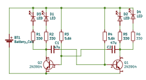

Refer to numbers in diagram above.
R1, R2, R5 and R6 are identical (330 Ω). These limit current through the LEDs.R3 and R4 (5.6 kΩ) are also identical. These set the current used to switch on the transistors and also the period of the flash (in combination with the capacitors).The badge uses a simple Astable Multivibrator to flash the LEDs.
For an interactive BOM, see ibom.